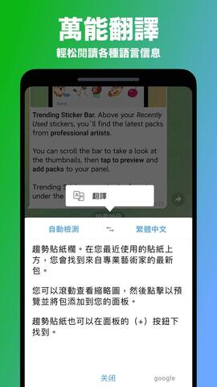
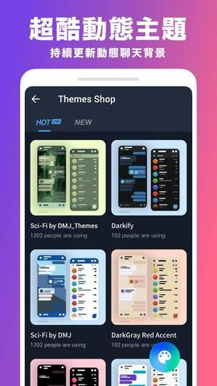

纸飞机(Telegram),一款轻松认识很多国际朋友随时在线互动的聊天软件
- 轻松认识很多国际朋友
- 一对一聊天，海外朋友交流
- 国际聊天约会，沟通无障碍
v9.5.4版本 2023.2.1发布 >

纸飞机可以将聊天和协同有机结合在一起
- 可自定义聊天软件以及创建机器人
- 可容纳20万群成员、可以分配管理员
- 加密保护设备免受黑名和恶意软件攻击
- 对文件和会话的大小没有限制
v9.5.4版本 2023.2.1发布 >

纸飞机(Telegram)全私有部署的即时通讯解决方案
- 我们坚信您的信息无比重要，不能被监听
- 所有软件全部部署您自己的机器上
- 消息文件均私有部署，传输过程全程加密
v9.5.4版本 2023.2.1发布 >

面向全平台的聊天软件解决方案
- 轻量级架构，服务器端支持Windows、Linux、macOS
- 桌面客户端使用Electron开发，支持Windows、Linux、macOS
- 手机端使用Flutter开发，安卓、iOS均可支持
v9.5.4版本 2023.2.1发布 >

Telegram更新历程
位置：首页 > Telegram更新历程
发布日期：2023-4-2
软件介绍：
飞机聊天APP下载最新版本是一个很好的聊天工具，为我们提供各种各样的聊天功能，我们可以使用这些功能与海外朋友交流，让大家可以轻松建立联系，更亲密地与他们谈天说地。拥有飞机聊天APP，我们就有了更多精彩的多样性，有了更多的机会联系新朋友。飞机聊天app下载中文版安卓给你带来了国际聊天和约会的体验。上面有很多来自不同的国家和城市用户，你可以依靠这个应用程序轻松认识很多国际朋友，随时可以在线互动。同时它也提供了多种对话方式，您可以随意选择。
纸飞机聊天APPv9.5.4
大小：68.93MB
类别：社交天
系统：IO、安卓
下载地址
软件截图
 |  |  |
飞机聊天APP下载最新版本的功能简介
1、在线聊天内容翻译
输入发送的信息文本，点击翻译查看相应内容;
2、切换翻译语言
聊天时可根据聊天朋友的国籍对象选择相应的翻译语言;
3、实时视频翻译
支持在视频中通过翻译功能实时查看对话翻译内容;
4、发送语音包内容
点击语音包工具，输入自己的语音内容，发送聊天语音;
5、语音电话交友
交朋友聊天时，可点击启动语音校友工具向朋友开启语音;
6、视频交友功能
使用飞机聊天app下载中文版安卓可以与外国朋友视频交友。
飞机聊天APP下载最新版本的特色
1、大量用户可以在这里自由交互，支持所有设备的操作。
2、飞机聊天app下载中文版安卓上有许多社交方式可以给用户带来更多新的、不同的乐趣。
3、我们可以不时加强国内外用户之间的互动，在这里交外国朋友。
4、有了通用的全球分布式数据中心网络，将会有越来越多的人连接起来。
飞机聊天APP下载最新版本的用法
1、可以在社交圈互动，和大家一起认识新朋友，找懂你的人。
2、我们可以不断加强国内外用户的互动，结交外国朋友。
3、大量用户可以在这里自由互动，适用于所有设施的运行。
4、可以在飞机聊天app下载中文版安卓上拍摄记录，也可以在这里展示自己，联系好友。
5、社交的方式有很多，可以给用户带来更新.不同种类的交流互动乐趣。
6、纸飞机软件采用先进的聊天加密技术，所有聊天数据不经过服务器。
飞机聊天APP下载最新版本的推荐原因
1、用户可以通过共享群链接邀请更多的朋友加入高数量的群组。
2、强大的多人聊天功能可以让用户建立群聊群，邀请更多的人。
3、用户可以向组上传更多的文件资源，促进更好的交流和文件共享。
4、新的在线聊天模式，用户可以随时随地在飞机聊天app下载中文版安卓进行非常免费的聊天和聊天。
如果你也喜欢飞机聊天APP下载最新版本，那就快来麦块体验飞机聊天app下载中文版安卓吧！
飞机聊天APPv9.5.4版本
【省电模式】
1、精美动画和轻量级效果经过优化，使任何手机都感觉功能强大，但现在可以禁用以延长电池寿命并提高旧设备的性能。
2、省电模式可以设置为在电池电量达到一定百分比时自动开启——通过单独的切换可以禁用特定效果。
【精细播放速度】
多年来，一直不能够更改视频、播客、语音和视频消息的播放速度。 现在，您可以通过按住 2x 按钮选择 0.2x–2.5x 之间的任何速度来获得更大的灵活性。
【小组阅读时间】
为了让小团队协作更轻松，100 人以下群组的阅读回执现在会显示每个人阅读您的消息的时间。
【自动发送邀请链接】
1、允许用户可以控制谁可以将他们添加到组中。如果您邀请的人对此有限制，您现在可以快速将邀请链接作为消息发送给他们。贴纸包的动态顺序。
2、从上次更新开始，最近使用的贴纸包移至面板顶部以便于访问。如果你想让你的包留在原地，你可以点击贴纸面板中的齿轮图标并关闭动态包顺序。
【翻译的机器人描述】
机器人开发人员现在可以通过翻译机器人描述和“这个机器人能做什么?”来完全本地化他们的机器人。部分分为多种语言。
【改进了iOS上的文件夹支持】
iOS用户可以一键将文件夹中的所有聊天标记为已读。转发消息时，可以使用文件夹快速找到合适的聊天。这些改进也将在下一次更新中出现在我们的程序中。
【新动画表情符号】
如果您想知道此更新是否包含十个新的高级用户自定义表情符号包——是的，它包含。
【新的交互式表情符号和反应】
1、我们的动画师添加了新互动版本。在一对一的聊天中发送其中任何一个，然后点击为您和您的伴侣释放全屏效果。每个人也可以使用这些表情符号作为反应。
2、昆虫学家可能不同意，但我们不喜欢虫子。因此，在这个更新周期中，开发人员暂停了两周的时间来实施新功能，并消除了应用程序中的400多个已知缺陷。
飞机聊天APPv9.4.2更新内容
1、头像制作工具
您可以快速将任何贴纸或动画表情符号变成您的帐户、群组或频道的头像。每个人都可以为这些图片使用动画和自定义表情符号。
2、翻译整个聊天
高级用户现在可以通过点击顶部的翻译栏实时翻译整个聊天、群组和频道。选项菜单可让您隐藏栏并控制翻译哪些语言。
3、表情符号类别
贴纸和表情符号现在按面板中的 或 等类别以及选择反应或状态时进行排序。按住任何表情符号可放大并在发送前看得更清楚。
4、网络使用量统计
您可以通过详细的WiFi和移动数据饼图查看使用了多少数据，并调整您的自动下载设置以适合您的数据计划。
5、自动保存传入媒体
您可以根据媒体的大小、类型和接收自的聊天来控制何时将媒体自动保存到您的画廊。这个菜单现在也支持例外情况，所以你只能保存你想要的资料即可。
6、粒度媒体权限
管理员可以选择是否允许群组成员发送9种不同的媒体类型——例如照片、语音或视频消息。他们还可以禁用短信以创建纯媒体组。
7、年度高级订阅
通过预付一年的独家功能，您可以节省高达40%的订阅费。
飞机聊天APPv9.3.3更新内容
1、隐藏媒体
飞机app聊天软件支持剧透格式以隐藏消息中的任何文本。现在，您还可以使用模糊图像的闪光层覆盖照片和视频。 您的收件人只需轻按一下即可打破咒语并查看内容。
2、零存储使用
飞机app聊天软件几乎不占用您设备上的任何空间。 您可以随时从手机存储中删除媒体和文档，并从飞机app聊天软件云中重新下载它们。多年来，用户可以设置最大缓存大小或在一段时间后自动删除未使用的项目。
通过此更新，您可以为私人聊天、群组和频道中的缓存媒体添加单独的自动删除设置——特定聊天除外。
新的饼图有助于可视化占用空间的内容，媒体、文件和音乐的专用选项卡让您只需轻点几下即可清除最大的项目。
3、新的绘图和文本工具
飞机app聊天软件已经非常强大的媒体编辑器已经完全重新设计。绘图工具根据绘图速度动态更改宽度并自动平滑您的线条。
有一个新的模糊工具可以编辑敏感数据以及5种高精度的颜色选择方式，包括吸管工具。
在向照片或视频添加文本时，您现在可以更改其大小、字体和背景。所有用户都可以为图像上的文本添加自定义动画表情符号。
4、隐藏群组成员
积极的反垃圾邮件设置等工具可帮助聊天管理员保持大型群组的清洁——但某些群组可能还希望保护其成员免受不需要的个人消息的侵害。
拥有 100 多个成员的群组管理员现在可以选择隐藏成员列表。这样，如果人们不向群组发送消息，只有其管理员会知道他们在那里。
v9.2.2更新内容
通过此更新，您可以在没有 SIM 卡的情况下拥有一个纸飞机app聊天软件的帐户，并设置一个全局计时器以自动删除所有新聊天中的消息。 现在，群组中的主题更加强大，同时适用于成员超过 100 人的群组。
1、在纸飞机app聊天软件上，陌生人永远不会看到您的电话号码——我们的用户可以控制谁可以看到他们的号码，以及是否允许其他人通过他们的电话号码找到自己。
今天，即将开始了一个新的隐私时代。您可以拥有一个没有SIM卡的纸飞机APP帐户，并使用平台上可用的区块链支持的匿名号码登录。
2、自动删除所有聊天记录
纸飞机app聊天软件早在2013年就引入了自毁消息。用户可以删除他们为双方发送或接收的任何消息而不留痕迹。 他们还可以设置自动删除计时器，以便在一段时间后清理个人聊天记录。
今天，我们正在将您对数字足迹的控制扩展到未来。 您现在可以设置全局自动删除计时器以自动删除所有新聊天中的消息。当然，现有聊天也可以不受到影响，但您可以从“设置”>“隐私和安全”>“自动删除消息”中的新菜单轻松地将自动删除设置扩展到其中任何一个。
计时器将自动应用于您与用户的所有新聊天(无论是谁发起的)以及您创建的所有新群组。
我们还简化了在小型私人群组中设置自动删除的操作——现在任何有权更改群组名称和图片的成员都可以启用计时器。
3、终极隐私
纸飞机app聊天软件的独特组合是不留痕迹地为所有参与者删除消息，并使用自动删除计时器控制现有和未来的聊天，让您完全拥有整个消息历史记录。
4、话题2.0
我们之前的管理员提供了将讨论组织成主题的选项，将经典的互联网论坛与最新的消息传递技术相结合。 如今，主题变得更加强大——现在可用于100名或更多成员的群组。
带有主题的群组以时尚的双列模式打开，因此您可以像以前一样快速访问其它聊天。要直接从您的聊天列表切换到最新主题，只需点击预览中的新按钮即可。
v8.8.5更新内容
1、新增截屏提醒、群发盖楼、消息分组、批量好友管理功能;
2、新增快速加载功能：软件支持图片、视频加载更加迅速;
3、新增隐私保护功能：强大的密码保护以及贴心的伪密码功能，给你一个属于自己的小空间;
4、BUG修复，提升稳定性，使用更加安全放心;
5、页面优化，新增快捷反馈页面;
6、加强通话质量，自由选择路线。